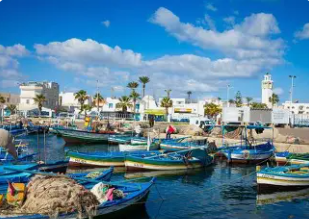
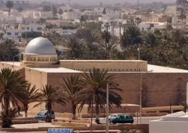
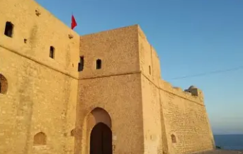
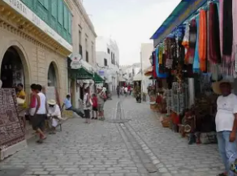
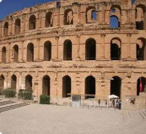

La Perle du Sahel

Mahdia est un gouvernorat situé sur la côte est de la Tunisie, dans la région du Sahel. C'est une ville portuaire historique fondée en 921 par les Fatimides, qui en firent leur première capitale avant de conquérir l'Égypte.
La ville de Mahdia, chef-lieu du gouvernorat, est une presqu'île qui s'avance dans la Méditerranée. Elle est célèbre pour ses plages de sable fin, sa médina authentique, et son port de pêche traditionnel.
Le gouvernorat se distingue par son patrimoine fatimide unique, ses traditions maritimes ancestrales, son industrie de la pêche et du textile, et ses magnifiques plages préservées aux eaux cristallines.
Imposante porte fatimide du Xe siècle, entrée monumentale de la médina. Couloir voûté sombre de 44 mètres marquant l'entrée de l'ancienne ville fortifiée.
Magnifiques plages de sable fin et doré s'étendant sur des kilomètres. Eaux turquoise cristallines, idéales pour la baignade. Stations balnéaires réputées.
Important port de pêche artisanale, flotte de pêche traditionnelle colorée. Marché aux poissons animé chaque matin. Spécialités de poissons grillés et couscous de poisson.
Tradition séculaire du tissage de la soie et du textile. Industrie textile moderne importante. Ateliers artisanaux produisant la soie de Mahdia réputée.

Mosquée fatimide fondée au Xe siècle, reconstruite en 1965 selon le plan original. Architecture sobre et majestueuse sans minaret ni décor. Cour immense pavée de marbre blanc avec vue sur la mer. Monument emblématique de la dynastie fatimide.

Imposante forteresse ottomane du XVIe siècle construite sur les vestiges du palais fatimide. Domine le port et offre une vue panoramique exceptionnelle sur la Méditerranée. Musée archéologique à l'intérieur.

Médina authentique et préservée avec ses ruelles étroites, maisons blanchies à la chaux et portes colorées. Souks traditionnels, cafés maures et artisans. Atmosphère paisible et charme méditerranéen unique.

Le célèbre amphithéâtre romain d'El Jem, classé UNESCO, se trouve dans le gouvernorat voisin mais est facilement accessible depuis Mahdia. Troisième plus grand amphithéâtre romain du monde, construit au IIIe siècle, pouvant accueillir 35 000 spectateurs.